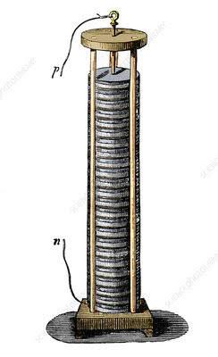

Electricity has come a long way since its discovery, transforming from a curious phenomenon to the backbone of modern civilization.
This journey spans centuries of innovation, from the first experiments with static electricity to the development of alternating current (AC)
and direct current (DC) systems that power our world today.
Electricity
The evolution of electricity is a fascinating journey that spans centuries, marked by groundbreaking discoveries and innovations that have transformed human society. From ancient civilizations' early experiments with static electricity to the development of modern power grids, electricity has become a cornerstone of technological progress. Key milestones, such as the work of pioneers like Benjamin Franklin, Alessandro Volta, and Thomas Edison, laid the foundation for the generation, distribution, and widespread use of electrical power. Today, electricity drives nearly every aspect of daily life, from lighting and communication to transportation and industry, making it one of the most essential forces in the modern world. Understanding the history and development of electricity highlights not only the ingenuity behind these advancements but also the profound impact they continue to have on our world.
Invention of the Battery
Year : 1800
Alessandro Volta invented the voltaic pile, the first chemical battery, which provided a reliable
and steady source of electrical current. This breakthrough laid the foundation for future
experiments and practical applications of electricity.

Invention of the Light Bulb
Year: 1879
Thomas Edison invented the practical incandescent light bulb. His work provided a reliable source
of artificial light that transformed the way humans live and work, illuminating homes, streets, and workplaces.
Invention of the Electric Motor
Year: 1888
Nikola Tesla developed the first practical electric motor, which revolutionized industries by
introducing a reliable way to convert electrical energy into mechanical energy for various applications.
Invention of the Solar Cell
Year: 1954
The first practical solar cell was invented by researchers at Bell Labs. This solar cell converted
sunlight into electricity, marking a major step forward in renewable energy technology and sustainability.
Invention of Wireless Electricity
Year: 2025
Wireless electricity technology is set to revolutionize the way we power devices, eliminating the need
for physical connections. This innovation paves the way for a more efficient and flexible energy distribution system.
Resistor
A resistor is an electronic component that limits the flow of electric current in a circuit. It follows Ohm's Law, where the current is proportional to the voltage and inversely proportional to resistance. Resistors come in different values and materials, helping protect components, control voltage, and adjust current. They can be fixed or variable, depending on the circuit's needs.
Capacitors
A capacitor is a passive electronic component that stores and releases electrical energy in the form of an electric field. It consists of two conductive plates separated by an insulating material called a dielectric. When a voltage is applied across the plates, the capacitor stores charge, and when the voltage is removed or changes, it discharges the stored energy. Capacitors are commonly used in circuits to smooth out voltage fluctuations, filter signals, and store energy for short periods. They are measured in farads (F), with smaller values used in most electronics, such as microfarads (µF) or picofarads (pF). Capacitors are crucial in applications like power supplies, signal processing, and timing circuits.
AC and DC
AC (Alternating Current) and DC (Direct Current) are two types of electrical current that differ primarily in the direction of flow. AC alternates its direction periodically, with the voltage fluctuating between positive and negative in a sinusoidal wave pattern, making it ideal for long-distance power transmission and use in household appliances. On the other hand, DC flows in a single, constant direction, maintaining a steady voltage, and is typically used in devices like batteries, electronics, and solar panels. While AC is more efficient for transmitting power over large distances, DC is better suited for applications requiring a stable, constant current, such as in mobile devices and electric vehicles.
AC vs DC Current
Alternating Current (AC) vibrates back and forth in a sinusoidal pattern.
Direct Current (DC) flows in a single direction, maintaining a constant voltage.
The Evolution of Electricity
Historical Foundations
From Faraday's groundbreaking electromagnetic discoveries to Edison's practical incandescent lamp,
electrical evolution has fundamentally transformed human civilization. The 19th century witnessed
the birth of electrical engineering, laying the groundwork for our modern powered world.
Key Electrical Innovations
The development of alternating current systems, semiconductor technology, and smart grid solutions
revolutionized energy distribution and consumption. Breakthroughs in renewable energy technologies
and battery storage are reshaping our relationship with electrical power.
Future Energy Frontiers
Emerging trends like wireless power transmission, superconducting materials, and AI-optimized
grid networks promise to redefine electrical infrastructure. The integration of IoT with energy
systems is creating new paradigms for sustainable power management.
Powering the Future
As we stand on the brink of energy revolutions, responsible innovation and sustainable practices
will illuminate our path forward. The journey from static electricity to smart grids demonstrates
humanity's remarkable capacity for electrical innovation.